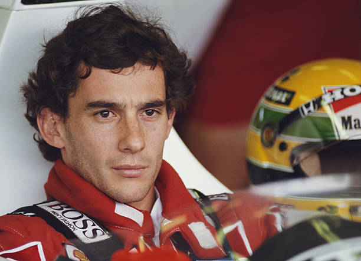
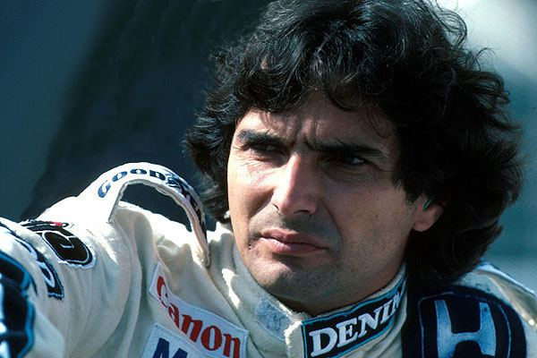
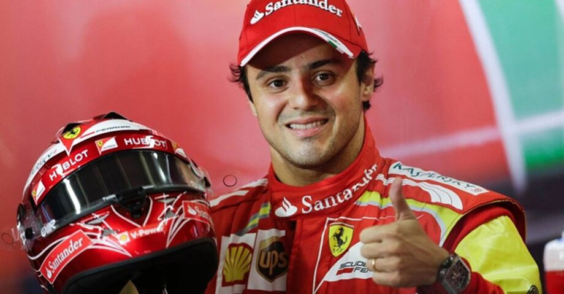
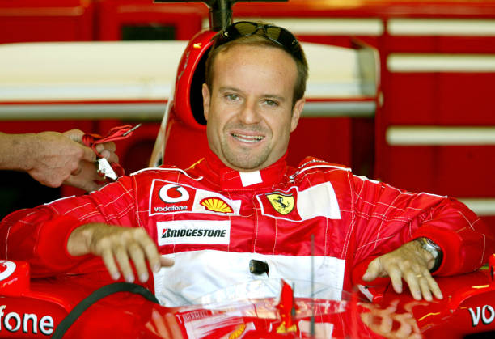

Ayrton Senna da Silva
Campeão Mundial 3 vezes
Ayrton Senna da Silva é um dos maiores ícones do automobilismo mundial. Tricampeão mundial de
Fórmula 1 em 1988, 1990 e 1991, destacou-se por sua habilidade extraordinária na chuva, velocidade
incomparável e dedicação incansável, conquistando a admiração de fãs no Brasil e no mundo.

Nelson Piquet Souto Maior
Campeão Mundial 3 vezes
Tricampeão mundial de Fórmula 1 em 1981, 1983 e 1987, Piquet se destacou por sua inteligência
estratégica e capacidade de desenvolver carros competitivos. Deixou um legado de técnica e
determinação que inspirou gerações.

Felipe Massa
Vice-Campeão Mundial 2008
Conhecido por sua velocidade consistente, Felipe Massa foi vice-campeão mundial em 2008. Sua
dedicação e garra fizeram dele um dos pilotos brasileiros mais respeitados na Fórmula 1.

Rubens Gonçalves Barrichello
Vice-Campeão Mundial 2002
Rubens Barrichello é lembrado por sua carreira longa e consistente na Fórmula 1. Participou de mais
de 300 corridas, superando desafios e ajudando equipes a evoluir, tornando-se um dos pilotos mais
admirados do Brasil.
Gabriel Lourenzo Bortoleto Oliveira
Sem título mundial
Gabriel Bortoleto conquistou reconhecimento em competições nacionais e internacionais. Com
habilidade e paixão pelo automobilismo, é uma das promessas do esporte no Brasil.